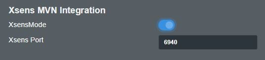
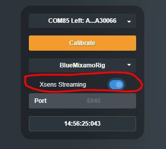
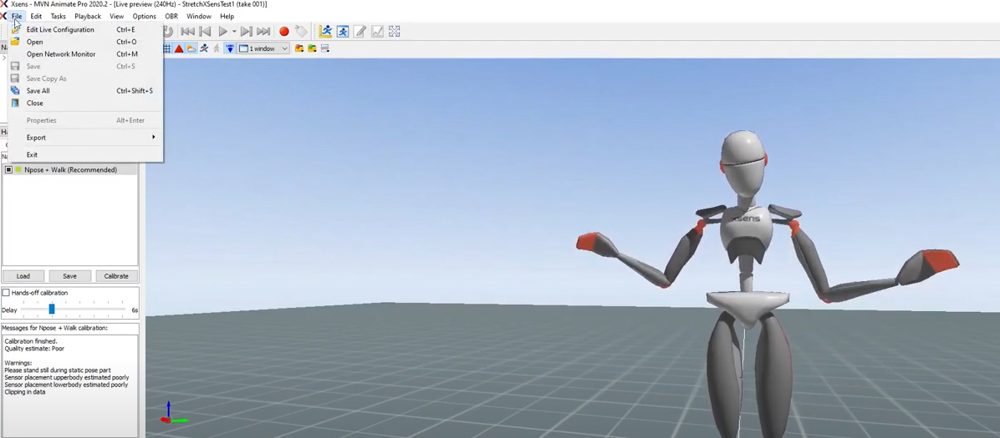
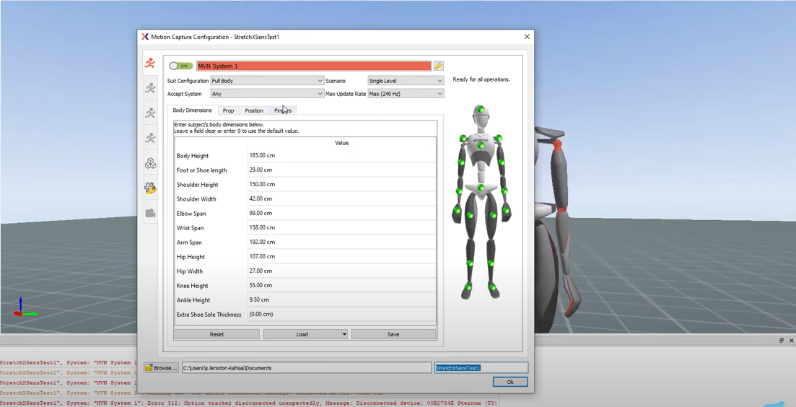
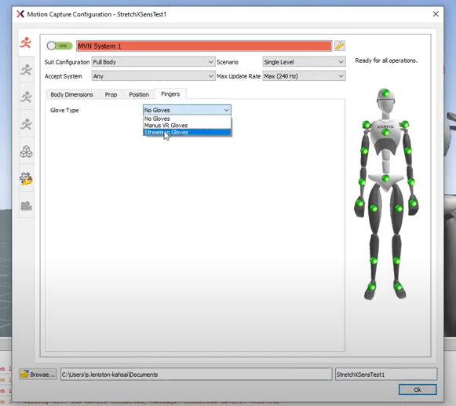
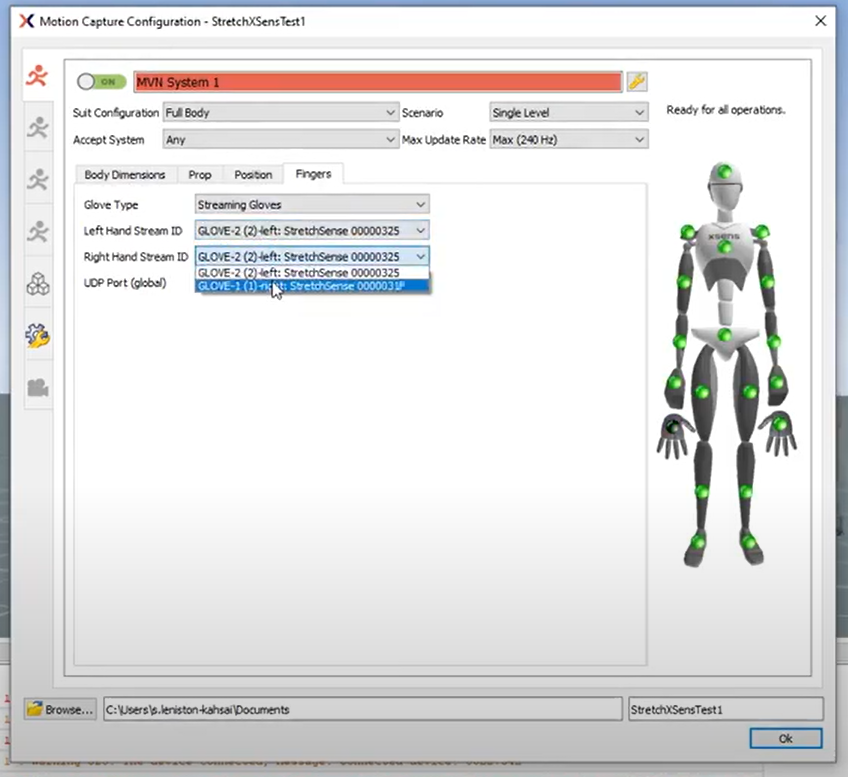
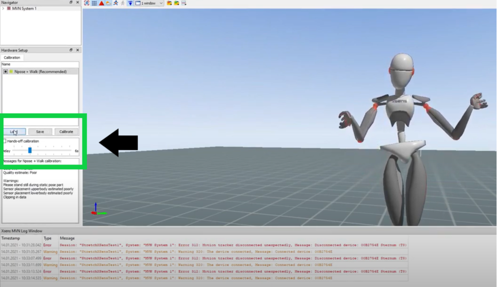
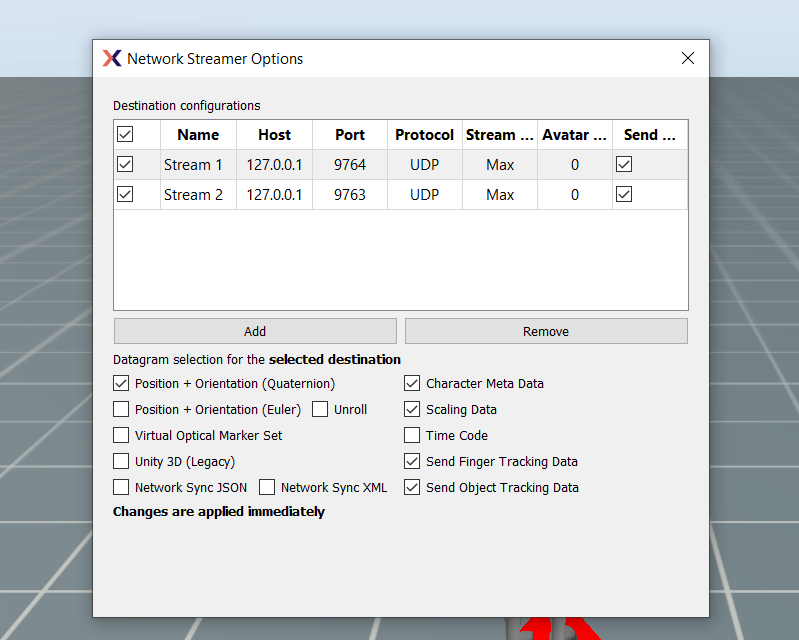
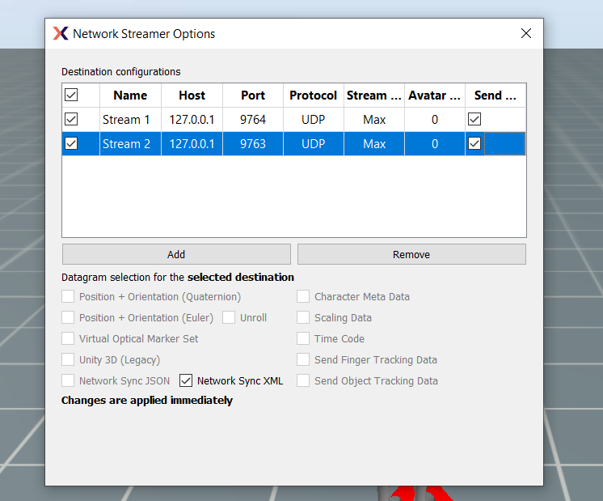

1. Xsens MVN Streaming Setup
IMPORTANT:
Xsens MVN Animate Plus or Pro version 2020.2 and later is REQUIRED due to native finger tracking integration with Hand Engine.
The free version of MVN does not contain finger tracking from StretchSense.
- In Hand Engine, open the settings menu (Windows -> Settings) and turn on the Xsens mode:

- Connect your gloves, and perform your calibration.
- Turn streaming on for each hand.

- Next, we have to turn on Finger streaming in MVN. Navigate to File>Edit Live Configuration (shortcut: Ctrl+E).

- While in the Motion Capture Configuration Window left click on the Fingers Tab.

- Turn Finger Tracking ON. Click the dropdown menu for Glove Type and select 'Streaming Gloves'.

- You will now notice that an extra node has become available on the Xsens Avatar representing the fingers. Using the dropdown menus select the left Glove for the Left-Hand Stream ID and the right glove for the Right-Hand Stream ID.
Note: Make sure the UDP port number matches the Port number in Hand Engine.
If your gloves are not showing up here make sure Xsens streaming is turned on for each glove separately (see Step 3).

Make sure the MVN UDP Port (global) number matches what is set in Hand Engine.
- Click 'Ok' (first image below) and your fingers should now be moving. To get your wrists in the correct orientation 'Load' your saved MVN Calibration

- You are now all set up to record within MVN Animate with Finger Data streaming from Hand Engine.
TIP:
Streaming Hand Engine -> MVN -> Unreal Engine
Please note that the default network streamer port in MVN (9763) can conflict with the default port Hand Engine listens on for a remote recording trigger from MVN.
For the above setup, please create two network streamers in MVN:
- Port 9764: Select Position+Orientation(Quaternion), Character Meta Data, Scaling Data, Send Finger Tracking Data, and Send Object Tracking Data.
- Port 9763: Select only "Network Sync XML" for the Datagram selection. This will transmit a recording trigger to Hand Engine
When connecting the MVN Live Link in Unreal Engine, please set the port to 9764 (as per the above setting)
- Unreal Engine Stream:

- Hand Engine Trigger:
